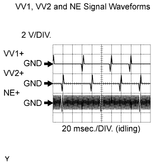
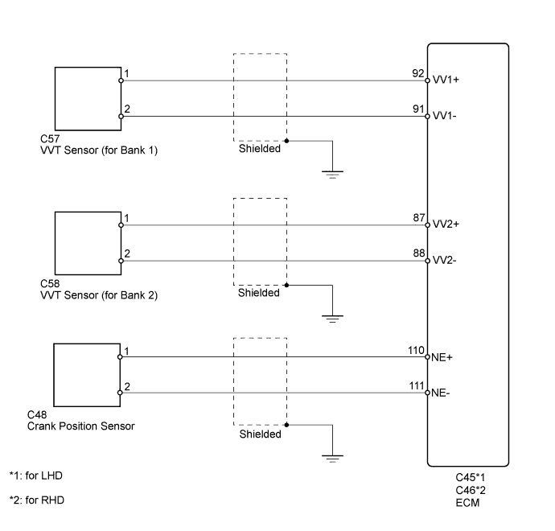
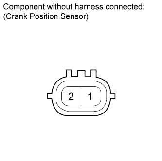
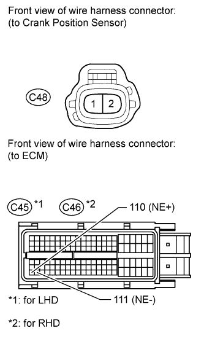
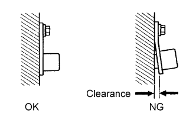

DTC P0335 Crankshaft Position Sensor "A" Circuit |
DTC P0339 Crankshaft Position Sensor "A" Circuit Intermittent |
| DTC Code | DTC Detection Condition | Trouble Area |
| P0335 | When either condition below is met:
|
|
| P0339 | Under conditions (a), (b) and (c), no CKP sensor signal is sent to the ECM for 0.05 seconds or more (1 trip detection logic): (a) An engine speed of 1000 rpm or more. (b) The starter signal is OFF. (c) 3 seconds or more have elapsed since the starter signal switched from ON to OFF. |
|
 |
| Item | Content |
| Terminal | VV1+ - VV1- VV2+ - VV2- NE+ - NE- |
| Equipment Setting | 2 V/DIV., 20 msec./DIV. |
| Condition | Cranking or idling |

| 1.READ VALUE USING INTELLIGENT TESTER (ENGINE SPD) |
Connect the intelligent tester to the DLC3.
Turn the engine switch on (IG).
Turn the tester on.
Enter the following menus: Powertrain / Engine and ECT / Data List / Engine Speed.
Start the engine.
Read the values displayed on the tester while the engine is running.
|
| ||||
| OK | ||
| ||
| 2.INSPECT CRANK POSITION SENSOR (RESISTANCE) |
 |
Disconnect the crank position (CKP) sensor connector.
Measure the resistance according to the value(s) in the table below.
| Tester Connection | Condition | Specified Condition |
| 1 - 2 | Cold | 1630 to 2740 Ω |
| 1 - 2 | Hot | 2065 to 3225 Ω |
|
| ||||
| OK | |
| 3.CHECK HARNESS AND CONNECTOR (CRANK POSITION SENSOR - ECM) |
 |
Disconnect the CKP sensor connector.
Disconnect the ECM connector.
Measure the resistance according to the value(s) in the table below.
| Tester Connection | Condition | Specified Condition |
| C48-1 (NE+) - C45-110 (NE+) | Always | Below 1 Ω |
| C48-2 (NE-) - C45-111 (NE-) | Always | Below 1 Ω |
| C48-1 (NE+) or C45-110 (NE+) - Body ground | Always | 10 kΩ or higher |
| C48-2 (NE-) or C45-111 (NE-) - Body ground | Always | 10 kΩ or higher |
| Tester Connection | Condition | Specified Condition |
| C48-1 (NE+) - C46-110 (NE+) | Always | Below 1 Ω |
| C48-2 (NE-) - C46-111 (NE-) | Always | Below 1 Ω |
| C48-1 (NE+) or C46-110 (NE+) - Body ground | Always | 10 kΩ or higher |
| C48-2 (NE-) or C46-111 (NE-) - Body ground | Always | 10 kΩ or higher |
|
| ||||
| OK | |
| 4.CHECK SENSOR INSTALLATION (CRANK POSITION SENSOR) |
 |
Check the CKP sensor installation.
|
| ||||
| OK | |
| 5.CHECK CRANKSHAFT POSITION SENSOR PLATE NO. 1 (TEETH OF SENSOR PLATE) |
Check the teeth of the sensor plate.
|
| ||||
| OK | |
| 6.REPLACE CRANKSHAFT POSITION SENSOR |
Replace the crank position sensor (Click here).
| NEXT | |
| 7.CHECK WHETHER DTC OUTPUT RECURS |
Connect the intelligent tester to the DLC3.
Turn the engine switch on (IG).
Turn the tester on.
Clear DTCs (Click here).
Start the engine.
Enter the following menus: Powertrain / Engine and ECT / DTC.
Read DTCs.
| Result | Proceed to |
| No DTC is output | A |
| P0335 or P0339 is output | B |
|
| ||||
| A | ||
| ||